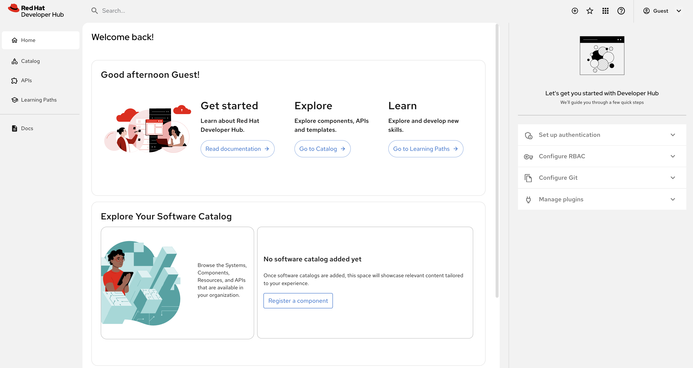

Install and Configure Red Hat Developer Hub
Installation Requirements
This guide follows an Operator-based installation method for Red Hat Developer Hub. A Helm-based installation option is also available, but is outside the scope of this module.
Refer to the latest Red Hat Developer Hub documentation for up-to-date installation requirements.
For Red Hat Developer Hub version 1.6, the following hardware resources are recommended:
-
7 vCPU
-
26 GiB Memory
-
23 GiB Storage
OpenShift versions 4.16 through 4.19 are supported. Visit the Red Hat Developer Hub Life Cycle page for the latest information.
Operator Install & Verification
Your environment has been preconfigured with the Red Hat Developer Hub Operator preinstalled. You’ll verify that the Operator is installed and running in this section.
Access OperatorHub and Installed Operators
-
Log in to the {openshift_console_url}[OpenShift Web Console^] using the following credentials:
-
Username:
{openshift_admin_user} -
Password:
{openshift_admin_password}
-
-
Dismiss any popups that appear.
-
If the Developer perspective is enabled, switch to the Administrator perspective using the Perspective Switcher in the top-left of the UI.
-
Expand Operators section in the side menu and click the Installed Operators link.
You’re now viewing the operators that have been preinstalled in your environment.
Confirm Red Hat Developer Hub Operator is Installed
-
Ensure All projects is selected in the Project selector - cluster-scoped operators will be listed.
-
Select Red Hat Developer Hub from the listed operators.
|
Contact a lab administrator if the Red Hat Developer Hub Operator is not listed. |
Create a Red Hat Developer Hub Instance
The Backstage Custom Resource
The Red Hat Developer Hub Operator provides a Backstage Custom Resource Definition (CRD) for Kubernetes. This CRD is used to provision new instances of Red Hat Developer Hub on OpenShift clusters.
A minimal Backstage CR resembles the following YAML:
apiVersion: rhdh.redhat.com/v1alpha3
kind: Backstage
metadata:
name: my-rhdh-instance
spec:
# define application specific configurations, e.g create an OpenShift Route
application:
route:
enabled: true
# Provision a Postgres database for storage. In production scenarios, it's
# recommended to use a Postgres instance that's managed and configured for HA
database:
enableLocalDb: trueOnce this CR is applied to the OpenShift cluster, the Red Hat Developer Hub Operator will provision a new instance of Red Hat Developer Hub in the namespace where the CR was created.
|
Before creating a Backstage CR, we need to satisfy some prerequisites. So don’t apply that YAML to your environment just yet! |
Create a Project/Namespace
-
Visit the {openshift_console_url}[OpenShift Web Console^].
-
Switch to the Administrator perspective using the Perspective Switcher in the top-left of the UI.
-
Navigate to Home > Projects, then click the Create project button.
-
Enter the name
setup-rhdhin the popup that appears, then click Create.
You’ll use this project throughout this module - it’s essential that you use the name setup-rhdh or subsequent exercises won’t work as expected.
Defining a Backstage Configuration
As mentioned earlier, Red Hat Developer Hub is based on the Backstage CNCF project. Backstage requires an app-config.yaml to define its configuration. The app-config.yaml can be mounted as a volume in Backstage Pods that are created by the Red Hat Developer Hub Operator.
In this section you’ll create a basic Backstage configuration and store it as a ConfigMap on OpenShift in the setup-rhdh namespace.
-
Select Workloads > ConfigMaps using the side navigation.
-
Ensure that the setup-rhdh project is selected in the project selector.
-
Click the Create ConfigMap button on the ConfigMaps screen.
-
Switch to the YAML view, delete the existing content, then paste the following into the editor:
apiVersion: v1 kind: ConfigMap metadata: name: rhdh-config namespace: setup-rhdh data: app-config.yaml: | app: title: Red Hat Developer Hub baseUrl: https://backstage-rhdh-setup-rhdh.{openshift_cluster_ingress_domain} # Enable guest sign-in without user validation. This configuration # is unsafe - only use it for testing when Developer Hub is not # connected to upstream sources of data! auth: providers: guest: dangerouslyAllowOutsideDevelopment: true backend: baseUrl: https://backstage-rhdh-setup-rhdh.{openshift_cluster_ingress_domain} cors: origin: https://backstage-rhdh-setup-rhdh.{openshift_cluster_ingress_domain} -
Click Create to create the ConfigMap containing your app-config.yaml.
|
The URL referenced in the ConfigMap is determined by combining the Backstage CR name with "backstage" and the namespace name. For example, your namespace is |
Deploy a Red Hat Developer Hub Instance
-
Click the plus (
+) icon in the top-right corner of the OpenShift Web Console, then select the Import YAML option. -
Paste the following YAML into the editor:
apiVersion: rhdh.redhat.com/v1alpha3 kind: Backstage metadata: name: rhdh namespace: setup-rhdh spec: application: appConfig: mountPath: /opt/app-root/src # This instructs the operator to mount the ConfigMap # that you created into the Backstage Pods configMaps: - name: rhdh-config route: enabled: true database: enableLocalDb: true -
Click Create. You will be redirected to a screen showing your new Backstage CR.
This Backstage CR will be detected by the Red Hat Developer Hub Operator. The Operator will deploy Postgres and Backstage Pods in the setup-rhdh namespace. Verify the status of the Pods by visiting Workloads > Pods and checking that both Pods are marked as running and ready - this will take a minute or two.
| If you don’t see the expected Pods, make sure to select the setup-rhdh in the Project dropdown. |
Visit your Red Hat Developer Hub Instance
You can access your instance of Red Hat Developer Hub using a Route that was created by the Operator.
-
Select Networking > Routes in the side menu of the OpenShift Web Console.
-
Ensure that the setup-rhdh project is selected in the project selector.
-
Click the URL in the Location column on the Routes page. The Red Hat Developer Hub sign-in page will appear.
If an Application is not available message is displayed when you click the Location, wait another minute. This simply means the Pod readiness check has not passed yet, but will soon. -
Select the Guest sign-in option. You’ll automatically be logged in as a Guest user, and the home page will be displayed.

Conclusion
Nice work! You deployed an instance of Red Hat Developer Hub with a minimal app-config.yaml.
An internal developer portal is only valuable when it has been connected to sources of data and configured with templates. In the following sections you’ll learn how to connect Red Hat Developer Hub to:
-
Source Control (GitLab in this environment)
-
Single Sign-On (Keycloak in this environment)
-
Continuous Delivery (Argo CD in this environment)
Additionally, you’ll learn how to:
-
Safely include sensitive information in your app-config.yaml using Secrets
-
Manage plugins and plugin configuration
-
Enable role-based access control (RBAC)